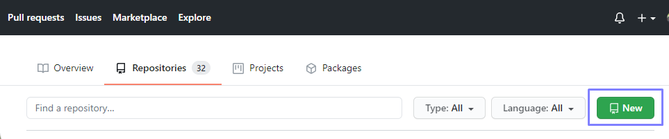
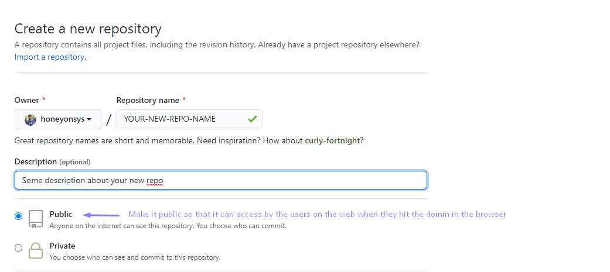
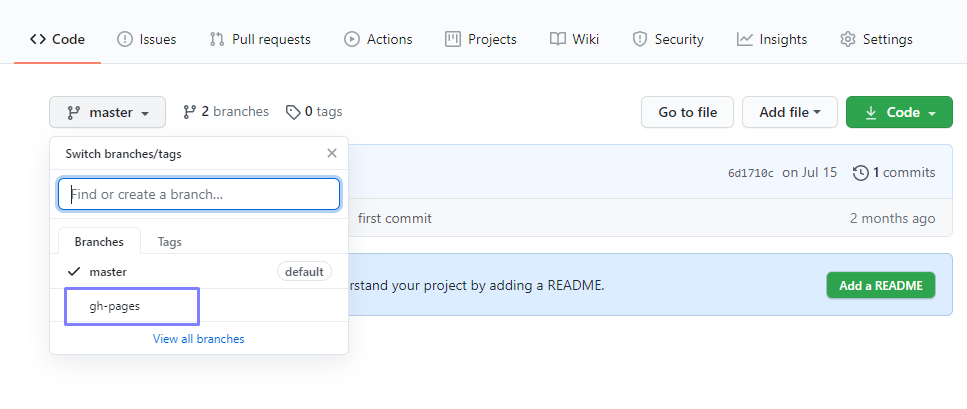
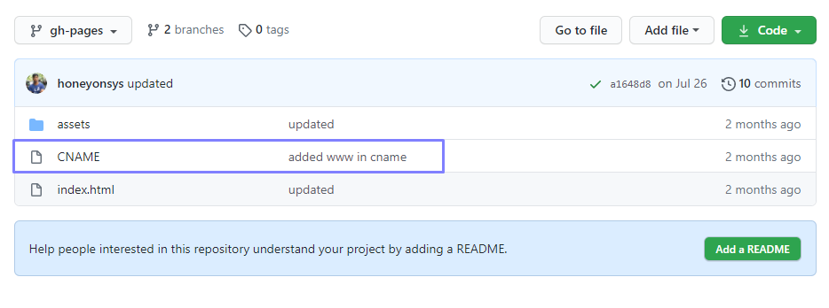
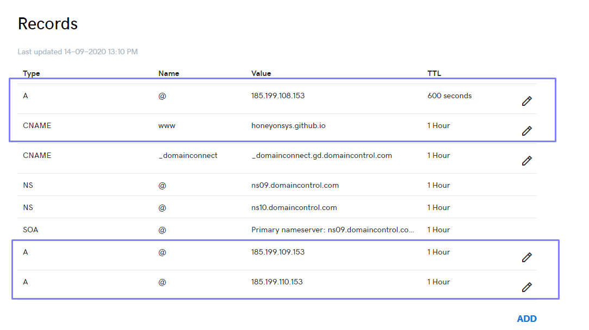

I assume that you already aware of how to host free website using github pages on their subdomain yourdomain.github.io. But this article is about how you can add multiple github pages website into your same account. Yes you don't need to create separate github account to host your free github pages website to a custom domain. What you need a new repository in your github account and a domain. Lets get started
1. First you need to create a new repository in your github account. Go to your repositories page and click on new button.

2. Then give any name to your repository and add some description in it. By default make this repository to Public so that it can access on the web

3. Once your repository get created then route to repository main page and create a new branch in it named "gh-pages"

4. Push all your website files into this branch (gh-pages) along with a .txt file names CNAME.

5. In this CNAME file insert your registered domain on which you want this content to be
publish. for e.g
- www.yourdomain.com
- yourdomain.com
6. Now go to your domain provider's website and redirect to DNS settings page. In my case i am using godaddy services to register my domain. and you need to add the following settings into the DNS.

For A record, set 185.199.108.153, 185.199.109.153, 185.199.110.153 and 185.199.111.153. To redirect www subdomain to the original domain, add a CNAME record with your GitHub pages profile URL with a .(dot) in the end, for example, 'YOUR-GITHUB-USERNAME.github.io.'.
Official References: For most up to date IP Addresses, use GitHub's official documentation and for setting up CNAME use this documentation.
Note: These DNS settings could take upto 24 hours to reflect. Your domain will not show the changes until these settings will not update in your domain provider.